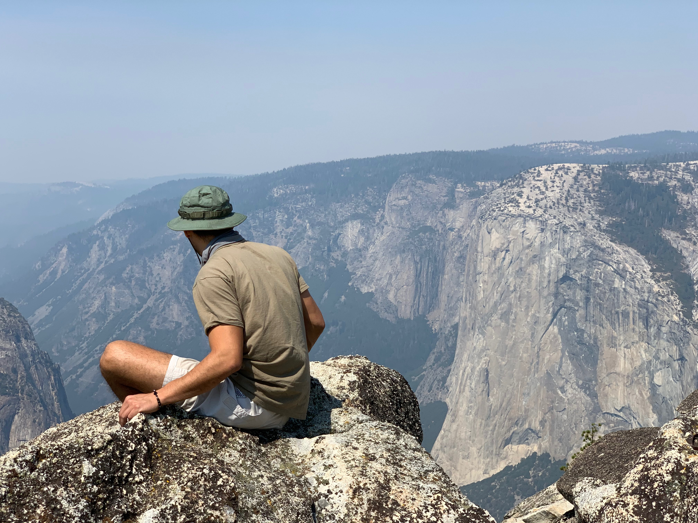

My name is Vincent Rodriguez but most people call me Vince, or Vin. I am currently working as a Barista for Merit Coffee Co., and am pursuing a career as a full stack web developer. In my spare time I am usually gaming, working out, reading, or hanging out with the homies. I also have a 5 year old German Shepherd named Shasta, who reminds me I can love unconditionally in spite of the occasional trash bags torn and thrown across the living room. I believe I have a creative personality and get a great sense of enjoyment from completing works of art in any form. I hope that I will be able to translate this creative thinking into my web development career, as soon as I have a firm grasp on coding.
I plan to use the skills learned through this course in order to pursue employment in another country, most likely Japan. I am both fascinated and in love with the culture of Japan, as well as the traditional art style. So much in fact that I have an enormous Koi tatooed on my left leg in a traditional Japanese art style, called Irezumi. Though I plan to live there for any number of years I also want to travel the world and experience other cultures, and learn from them. In order to gain a visual representation of things I enjoy, I have provided images of some artwork and the current progress of my tattoo in the Portfolio section.